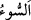

“sizi kim korur”
“ (kötülük)” insana kötü gelen ve üzen her şeydir. Burada kasdedilen katil,
hezimet ve benzerleridir.
“Ya da size rahmet” sağlık, zafer ve daha başka rahmet eserleri “dilerse” size kim
zarar verebilir? Burada rahmet, koruma konusunda kötülük ile bağlantılı olarak
getirilmiştir. Halbuki koruma ancak kötülükten olur. Çünkü mânâ “Allah size rahmet
murâd ederse kim bir kötülük dokundurabilir?” demektir. Kılıç kuşanarak ve mızrağı
elinde sıkıca kavrayarak almak anlamında söylenen “Kılıç ve mızrak kuşanarak”
sözünde olduğu gibi bu âyette de söz kısaltılmıştır.
“Onlar, kendilerine” fayda sağlayacak, kendilerinden zararı bertaraf edecek
“Allah’tan başka ne bir dost bulurlar ne de bir yardımcı.”
Bilesin ki bu âyet bazı önemli konulara delâlet etmektedir:
1- Ölüm kaçınılmazdır. Bazıları şöyle demiştir: “Ömür uzun olsa bile, ölüm gelip yüz
gösterdiği zaman o uzunluğun ne faydası vardır? Nûh (a.s.) bin sene bu dünyâda yaşadı,
bugün ise o öleli beş bin sene olmuştur.
Vah ki değerli ömür geçti,
Bu birkaç anlık zaman da geçecektir.
Bazıları şöyle demiştir: “Kişi kırk yaşına ulaştığında gökten bir münâdî ona:
“Yolculuk yaklaştı, azığını hazırla.” diye seslenir. Sevrî (k.s.) şöyle demiştir: “Aklı
olan kişiye Hz. Peygamber (s.a.)’in (vefât ettiği ) yaşına ulaşınca kefenini hazırlamak
gerekir. Hâtim-i Esam (k.s.) şöyle demiştir: “Her sabah mutlaka şeytan bana “Ne
yiyeceksin, ne giyeceksin ve nerede oturacaksın?” diye sorar. Ben de ona: “Ölüm
yiyeceğim, kefen giyeceğim ve kabirde oturacağım.” derim.
2- Ölümden kaçmak ecelleri/ömürleri artırmaz. Ecelleri ve rızıkları değiştirmek için
çalışan, kendisi için takdir edileni savuşturmayı uman kimseden, hâli daha kötü olan
kimdir? Ancak o mutlaka takdir edilenle yüz yüze gelecektir. Ondan kendisini koruyup
kollayacak ve kurtaracak kimse de yoktur. Hz. Ali (k.v.) şöyle demiştir: “En şerefli
ölüm Allah yolunda öldürülmektir (şehidliktir). Ebû Talib’in oğlunun canını kudret
elinde tutan Allâh’a yemin olsun ki bin kılıç darbesiyle ölüp şehid olmak, yatakta
ölmekten çok daha hafiftir.”
Şehidlikten sonraki büyük kurtuluş hiç dikkate alınmasa bile, insanın kaçtığı bu (Allah
yolunda) öldürülmekte, sadece ölüm sarhoşluklarından (sekerât) kurtulup rahata erme
dahi olsa bu, savaşta yerinde sebat etmeyi gerektiren hususlardan olurdu. Çünkü deniz
şehidi ölüm acısını hiç duymaz. Kara şehidi ise ancak bir çimdikleme ve karınca
ısırması kadar bir acı hisseder.
Bazıları şöyle demiştir: Ölümden ve savaştan kaçan kendisini ölümün kucağına atmış
olur. Savaşan ise canını müdâfaa etmektedir. Ecel tamam olunca ölüm kaçınılmazdır.